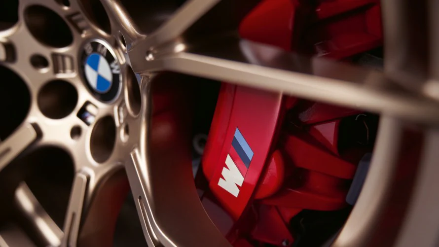

M Carbon-KERAMIK-BREMSE

Bei der serienmäßigen M Carbon-Keramik-Bremse ist der Einsatz der Bremskraft noch direkter. Das System ist korrosionsfrei, extrem hitzebeständig, im Verschleiß stark reduziert und trägt zur Gewichtseinsparung bei. Das wirkt sich positiv auf Agilität, Dynamik und Beschleunigung aus. Bremssättel in der Farbe Rot hochglänzend mit M Logo machen die besondere technische Ausstattung des BMW M5 CS von außen sichtbar.